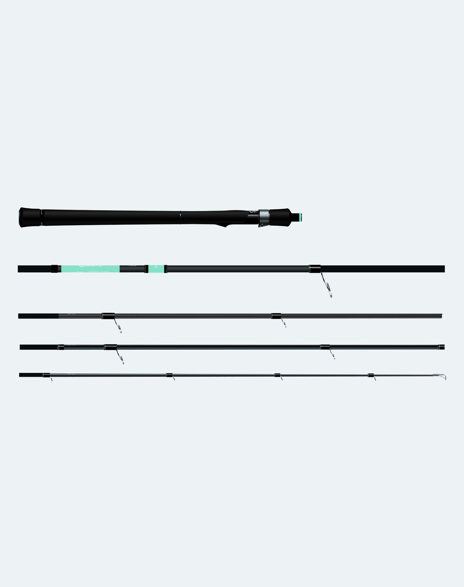
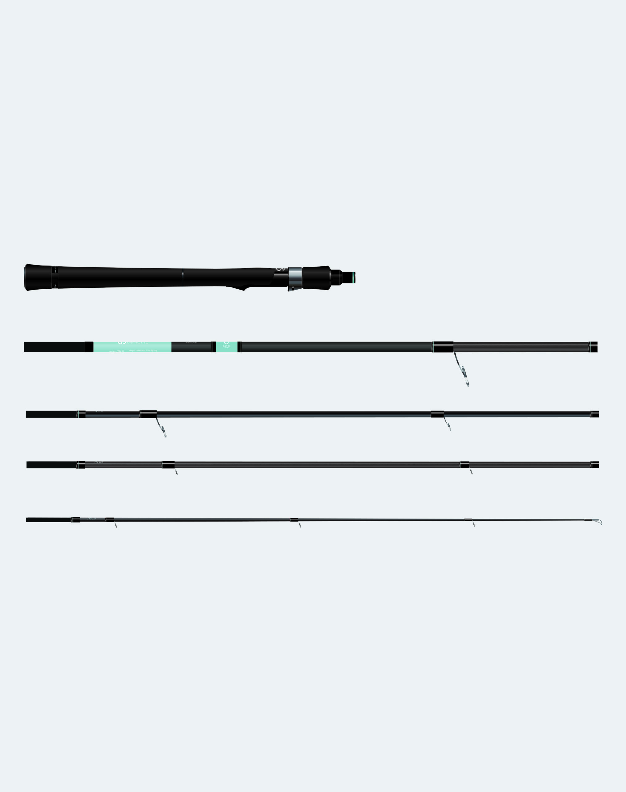
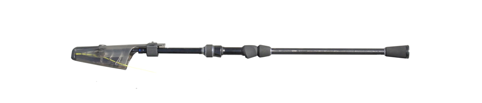

ディアナクト 85ML5 "Duskcall"
（Dianact 85ML5 "Duskcall"）
ディアナクト 85ML5 "Duskcall"（Dianact 85ML5 "Duskcall"）はGOTO9（ゴートゥーナイン）のシーバスロッドです。
ディアナクト 85ML5 "Duskcall"は、GOTO9の「普段使い」の快適さを追求したシーバスロッドです。「何時でも・何処でも・誰でも」をコンセプトにした汎用モデルで、バチ抜けから河川のナイトゲーム、デイのメタルバイブまで、1年を通じて使える1本を目指して作られています。2026年12月発売予定です。

画像出典:GOTO9公式HP
スペック
- メーカー
- GOTO9（ゴートゥーナイン）
- タイプ
- シーバスロッド（スピニング）
- 長さ
- 2.57m（8ft5in）
- 継数
- 5ピース
- 仕舞寸法
- 59cm
- 自重
- 145g
- ルアー
- 5〜25g
- ライン
- PE 0.6〜1.5号
- アクション
- レギュラーファスト
- カーボン含有率
- 92%
- グリップ長
- 325mm
- 価格
- 45,650円（税込）
- 発売
- 2026年12月予定
▼今すぐチェック
ディアナクト 85ML5 "Duskcall"の特徴
パターンに特化しない「普段使い」のための、持ち運びやすい5ピース
-
8割の力のキャストでもウェイトが乗る
8割程度の力でキャストした時のウェイトのノリを重視。オーバーヘッドからバックハンドまであらゆるキャストが決まりやすく、小さな振りのコントロールキャストでも狙いを付けやすい。
-
角なく曲がり込むファイト性能
ファイト時は角なくスムーズに曲がり込みながら、徐々にパワーを発揮する設計。リフトするパワーを持ちながら、不意のエラ洗いや足元での突っ込みをいなしてランディングまでサポートする。
-
仕舞寸法59cmの5ピース
「仕事終わりから出勤前まで」を楽しむGOTO9らしく、手軽に持ち出せる5ピースを採用。リュックでの持ち運びや駅のロッカー、中型以上のスーツケースにも入るので、出張先や旅行先の空き時間にも釣りができる。
ディアナクト 85ML5 "Duskcall"の選び方
河川や港湾のシーバスゲームを、1本で幅広くこなしたい人にまず候補になる1本。ルアーは5〜25gに対応し、春のバチ抜けから夜のシーバス、デイのメタルバイブまで、年間を通じてメインになるルアーを扱いやすい。
小型プラグで居着きのシーバスを繊細に狙ったり、チヌ・ライトロックにも使いたいなら、ライトモデルの78L5 "Dawncall"と比べてみてください。
ディアナクト 85ML5 "Duskcall"の向いている釣り
河川・港湾でのシーバスゲーム全般に向いている。バチ抜けシーズンのナイトゲームから、日中のメタルバイブまで1本で対応できる。
車を使わず、電車や自転車、カーシェアで釣りに行くスタイルにも合う1本です。
ワンポイント
2026年12月発売予定の新作ロッドです。発売前のため、在庫や最新情報はGOTO9公式サイトで確認してください。
5ピースのロッドは、継ぎ目がゆるむとトラブルの原因になります。使う前に継ぎ目がしっかり差し込まれているか確認しましょう。
ディアナクトシリーズの使い分け
| モデル | 長さ／ルアー | 得意な場面 |
|---|---|---|
| 85ML5 "Duskcall" | 2.57m／5〜25g | 河川・港湾のシーバス全般（本記事のモデル） |
| 78L5 "Dawncall" | 2.34m／3〜15g | 小型プラグの居着きシーバス・チヌ・ライトロック |
ディアナクトは85ML5と78L5の2モデル展開。どちらも5ピースで、仕舞寸法は85MLが59cm、78Lが55cm。
ディアナクト 85ML5 "Duskcall"とあわせてチェックしたいアイテム
-

ディアナクト 78L5 "Dawncall" GOTO9 詳細はこちら＞同じシリーズのライトモデル。2本目のロッドや、小型プラグ・チヌ用に。
-
 スウォーム80S
GOTO9
詳細はこちら＞
スウォーム80S
GOTO9
詳細はこちら＞
GOTO9のバチルアー。春のバチ抜けシーズンにこのロッドと合わせて。
-

デイスター CDS80ML-CS/T コアマン 詳細はこちら＞5ピース振出のシーバスロッド。同じく持ち運びやすさを重視するなら比較に。